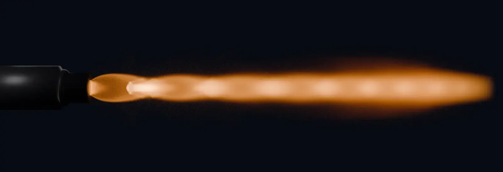
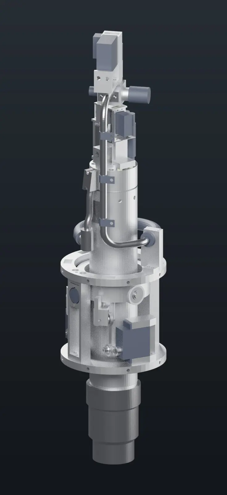
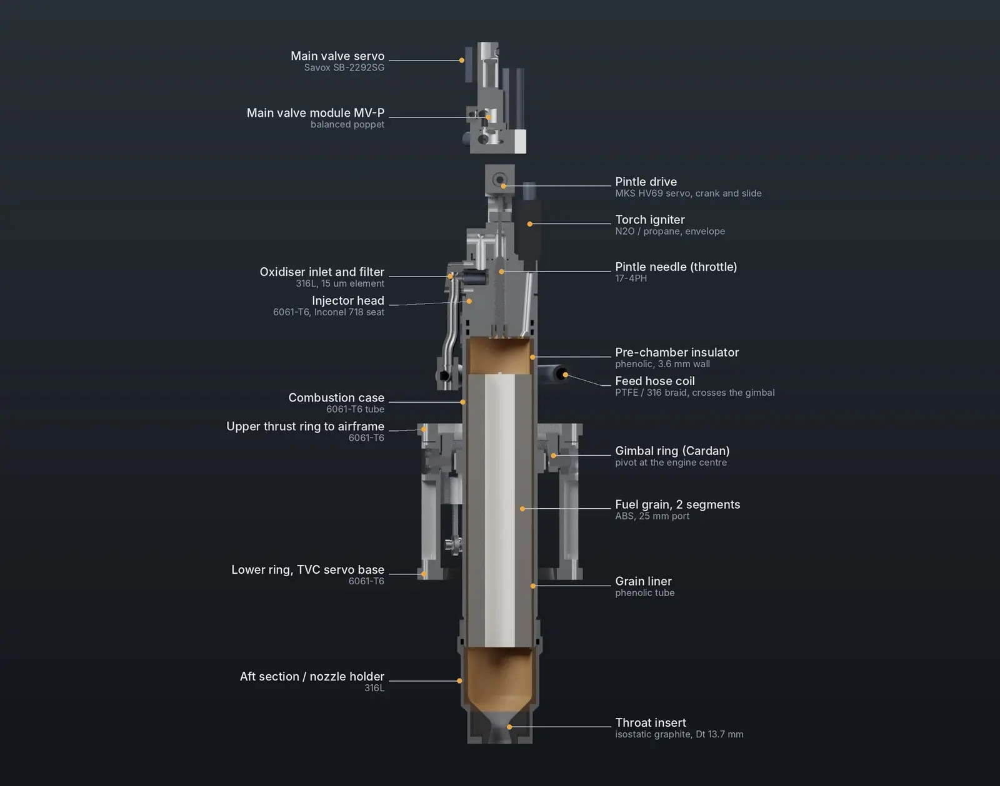
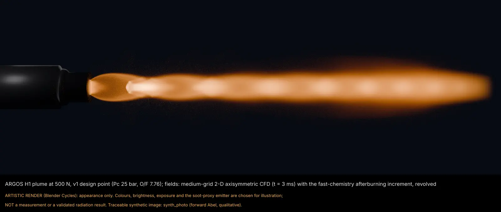
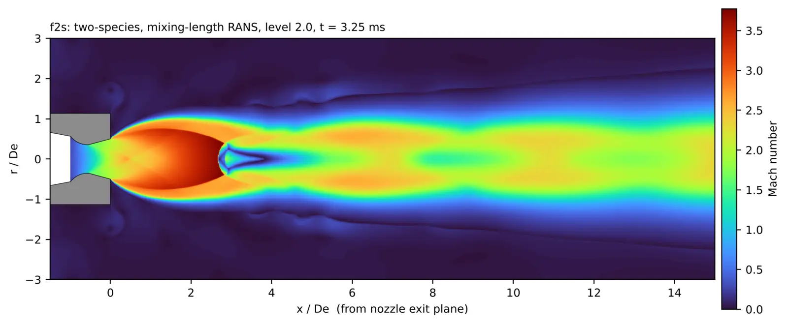
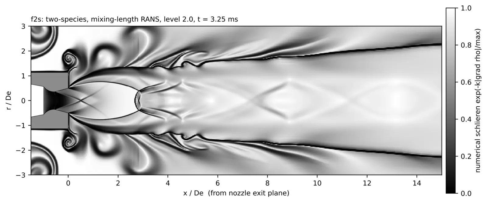
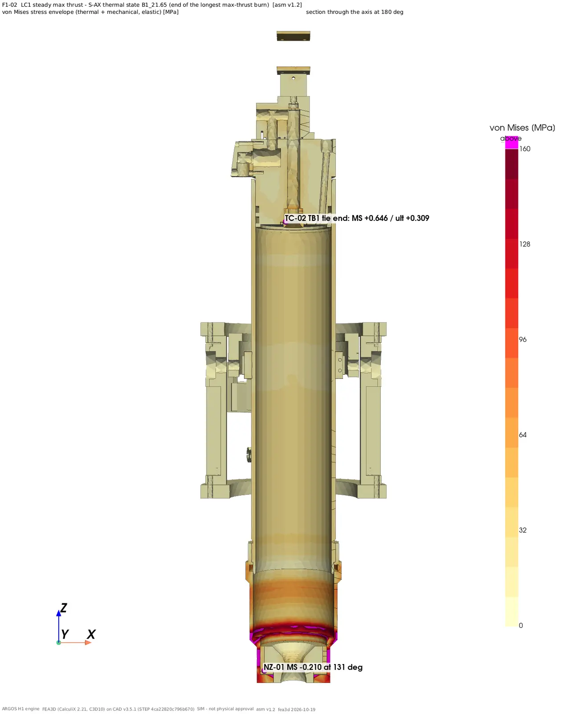
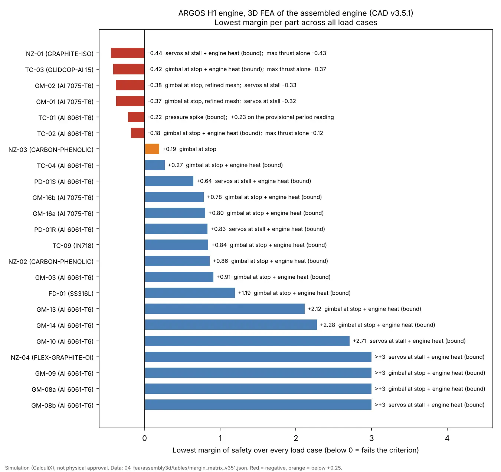
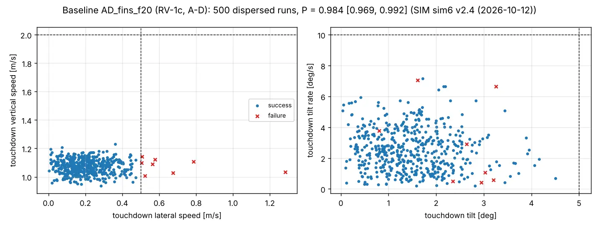

ARGOS-H1 engine
A 500 N self-landing hybrid rocket engine and its C++ controller, designed with AI agents. Design and simulation only.
Year2026
RoleDesigner
TeamPersonal project (the rocket airframe is my brother's)
StatusDesign & simulation only

01The project
The engine for my brother's ARGOS H1 rocket: a 500 N nitrous-oxide / ABS hybrid that must lift the rocket, throttle down and bring it back to an upright landing, steering with a two-axis gimbal.
I did this interdisciplinary work on my own with AI agents: requirements, combustion, CAD, assembled-engine FEA, plume CFD and the controller firmware. Nothing has been built or fired; every number carries an evidence tag that says where it comes from.
02What I did
- Requirements first: engine requirements turned into firmware interfaces, and each release checked against them.
- C++ controller firmware for a Teensy 4.1 (ARM Cortex-M7): ignition, throttle, shutdown and relight lockout.
- Software-in-the-loop: every release tested against a simulated engine and reviewed independently.
- Assembled-engine 3D FEA with a margin for every part under every load case, plus plume CFD and landing Monte Carlo.
- Found and fixed a real hazard: a faulty seat-temperature sensor could fake the "lit" signal; the fix freezes and checks it through ignition.
03Under the hood
C++ (Teensy 4.1)the engine control unit: sequencing, sensor checks and fault handling.
C++ simulation (SIL)a model of the engine the firmware runs against before any hardware exists.
Pythoncombustion sizing, FEA post-processing, Monte Carlo and the 161-page datasheet build.
CAD via SolidWorks MCPthe engine part set, driven by agents and checked by the FEA.
04In motion
05Figures







